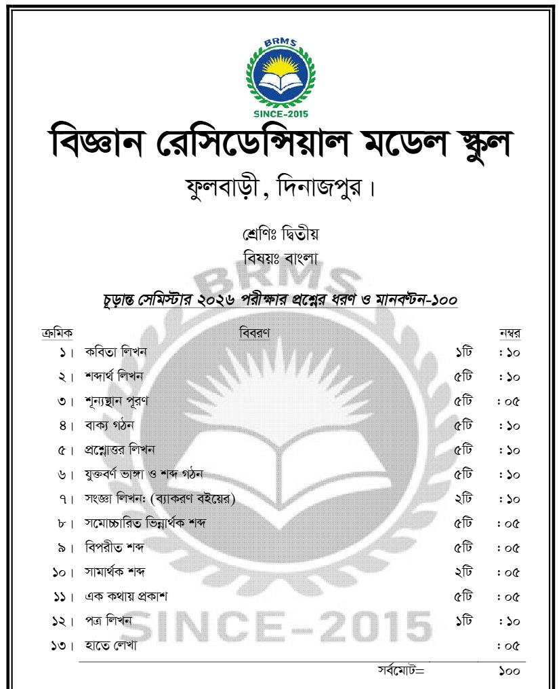
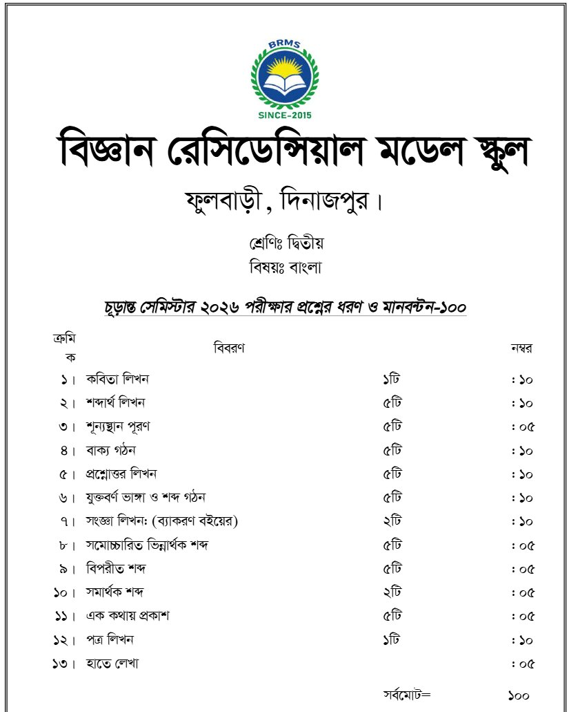
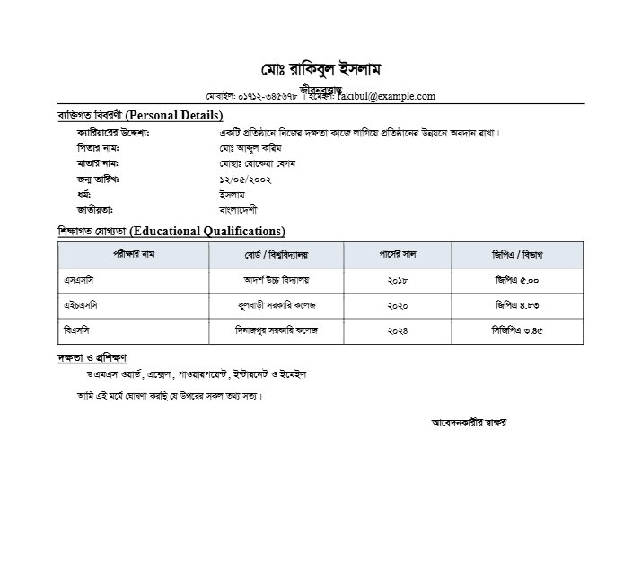
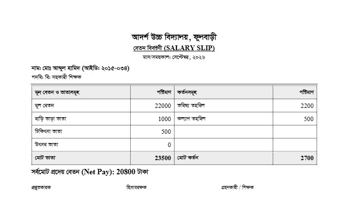
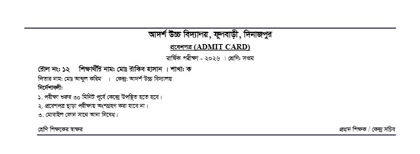
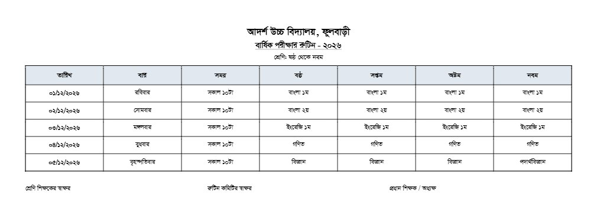

ধাপ ১: ফাইল আপলোড করুন
ধাপ ২: এআই কনভার্ট করবে
ধাপ ৩: Word ফাইল ডাউনলোড করুন
একজন ব্যবহারকারীর স্ক্যান করা প্রশ্নপত্র (বামে) আর ফয়জার থেকে তৈরি Word 2003 ফাইল, Word-এ খুলে তোলা ছবি (ডানে)


ফলাফল মূল ফাইলের মানের ওপর নির্ভর করে। ডাউনলোডের আগে স্টুডিওতে দেখে নিন।



